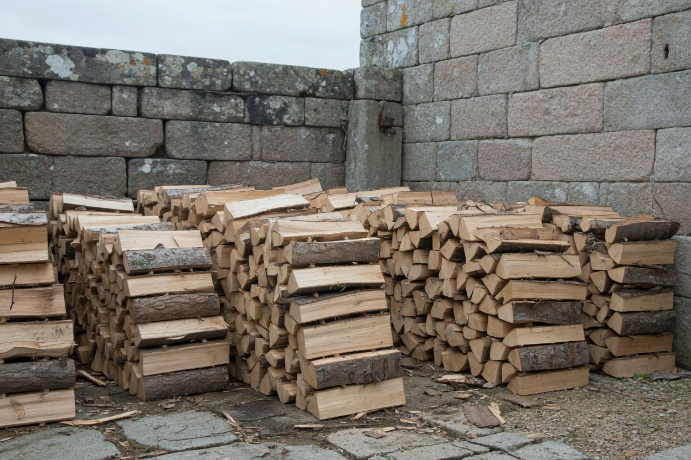

Nos prestations
Jardinage, clôture et petits travaux à Brest
Cinq familles de travaux, du jardinage d'entretien à la pose de clôture. Chaque intervention fait l'objet d'un périmètre écrit avant le chantier.

Jardinage et espaces verts
Petits travaux d'entretien pour garder un jardin propre et praticable, sans chantier paysager de grande ampleur.
- Tonte, débroussaillage léger, taille d'entretien
- Ramassage de feuilles, mise en ordre des abords
- Petits travaux d'espaces verts
Particuliers · Copropriétés / locaux
Demander un devis Détail des travaux d'entretien
Nous ne prenons pas : élagage de grands arbres, abattage complexe, conception paysagère complète, traitements phytosanitaires.

Clotures et portails
Pose de palissades, grillages et portails autour d'une maison, d'un jardin ou d'une propriété.
- Palissades
- Grillages
- Portails sans motorisation ni domotique
Particuliers
Demander un devis Détail de la pose de clôture
Nous ne prenons pas : motorisation, interphone, visiophone, domotique, clotures electriques, ouvrages de soutenement importants.

Maçonnerie paysagère
Petits ouvrages autour de la maison : murets bas, bordures, calepinage simple, reprise d'abords.
- Murets et bordures
- Petits aménagements de jardin
- Reprises localisées d'abords
Particuliers
Nous ne prenons pas : maisons, extensions, fondations, dallages structurels de grande surface, gros oeuvre.

Petit bricolage
Petites reparations, poses et ajustements, sans terrassement ni reprise de structure.
- Petites reparations et montages
- Ajustements, fixations, rangement d'atelier ou de local
- Coups de main techniques sur place
Particuliers · Professionnels
Nous ne prenons pas : électricité, gaz et plomberie (réservés aux entreprises qualifiées), gros œuvre, structure et fondations, travaux soumis à obligation d'assurance décennale.

Sciage du bois
Découpe et préparation de bois, notamment pour le chauffage, selon le volume et l'accès au terrain.
- Sciage
- Mise en stères / rangement sur place
Particuliers
Nous ne prenons pas : exploitation forestiere, abattage d'arbres de grande hauteur.
Une tâche à faire décrire ?
Décrivez le travail en quelques lignes. Le périmètre est confirmé avant toute intervention.
Demander un devis